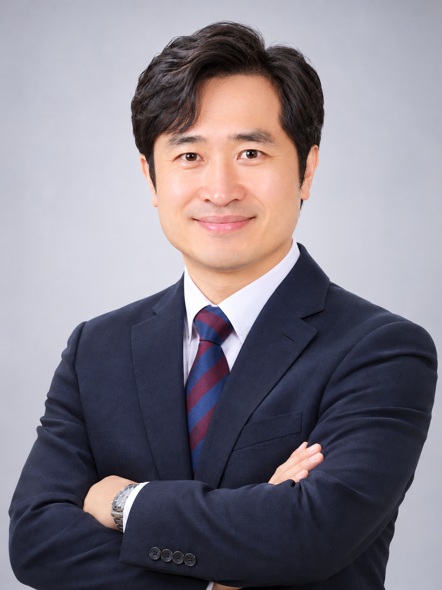

![길법무사사무소 붓글씨 길 로고]()
최근 대출이 있어도 개인회생이 가능할까요?
최근 발생한 채무가 있다는 사실만으로 일률적으로 신청이 배제되는 것은 아닙니다. 다만 대출 시점, 사용처, 상환 경위 및 신청 직전 재산 변동은 성실한 소명 대상이 될 수 있습니다.
상담 시 확인: 최근 대출 계약서, 입출금 거래내역, 자금 사용처 자료
빚의 규모보다 중요한 것은 현재의 소득, 재산, 채무 경위와 변제 가능성을 정확히 파악하는 일입니다. 길법무사사무소가 개인회생 신청에 필요한 서류와 절차를 안내합니다.
개인회생은 일정한 수입을 바탕으로 법원이 정한 변제계획을 수행하고 남은 채무에 대해 면책을 받을 수 있도록 하는 제도입니다. 신청 가능 여부는 소득과 채무뿐 아니라 재산·부양가족·채무 발생 경위 등을 종합해 검토해야 합니다.
급여소득자나 영업소득자처럼 장래에 계속적·반복적인 수입을 얻을 가능성이 있는 개인이어야 합니다.
개인회생채권 기준 담보채무 15억 원 이하, 무담보채무 10억 원 이하인지 확인합니다.
생계비와 소득, 보유재산, 우선변제채권 등을 검토하여 실현 가능한 변제계획을 수립해야 합니다.
처음부터 모든 서류를 완비할 필요는 없습니다. 현재 상황에 따라 필요한 범위가 달라질 수 있으므로 아래 사항부터 확인해 보세요.
소득·재산·채무 및 관할법원 확인
채권자목록·재산·소득자료와 변제계획안 등 준비
필요시 보정 및 개시결정 심사
채권자집회 등 절차를 거쳐 인가 여부 결정
계획에 따른 변제 수행 후 면책 절차
개인회생 상담에서 자주 확인하는 다섯 가지 쟁점입니다. 각 사정은 신청 가능 여부를 단번에 결정하는 기준이 아니라, 소명자료와 변제계획의 적정성을 검토할 때 중요한 요소입니다.
최근 발생한 채무가 있다는 사실만으로 일률적으로 신청이 배제되는 것은 아닙니다. 다만 대출 시점, 사용처, 상환 경위 및 신청 직전 재산 변동은 성실한 소명 대상이 될 수 있습니다.
체납 세금이 있다고 무조건 개인회생을 신청할 수 없는 것은 아닙니다. 조세채권의 성격·발생 시기·우선변제 관계와 실제 변제 가능성을 살펴야 하며, 모든 세금이 일반 금융채무처럼 감면된다고 볼 수는 없습니다.
배우자 명의라는 이유만으로 그 재산 전부가 채무자 재산이 되는 것은 아닙니다. 취득자금의 출처, 실질 소유관계, 재산 이전 경위 등을 확인해 채무자에게 귀속되는 재산이 있는지 검토할 수 있습니다.
채무 발생 경위만으로 결과를 단정할 수 없습니다. 손실 내역과 거래 경위, 최근 대출의 사용처, 보유자산, 현재 소득 등을 정확히 밝혀 법원의 심사 및 변제계획과 관련된 쟁점을 검토해야 합니다.
개인회생 신청만으로 기존 압류가 모두 자동 해제되는 것은 아닙니다. 법원은 신청 후 필요하면 중지·금지명령을 할 수 있고(채무자회생법 제593조), 개시결정 후에는 법률이 정한 범위에서 집행 등의 중지·금지 효과가 발생합니다(제600조). 압류 종류와 대상 채권, 명령의 범위를 구체적으로 확인해야 합니다.
※ 위 내용은 일반적인 정보 제공을 위한 것이며, 법원의 개시·인가·면책을 보장하지 않습니다. 구체적인 사건에 따라 필요한 자료와 법적 판단은 달라집니다. 법률 내용 확인일: 2026.11.03.
네. 장래에 계속적 또는 반복적인 영업소득을 얻을 가능성이 있고 다른 법정 요건을 충족한다면 신청을 검토할 수 있습니다. 사업소득을 입증할 수 있는 자료가 중요합니다.
세금 체납이 있다는 이유만으로 일률적으로 신청이 배제되는 것은 아닙니다. 다만 조세채권의 성격과 우선변제, 변제계획의 실현 가능성 등을 별도로 검토해야 합니다.
압류의 종류·진행 단계와 개인회생절차의 중지·금지 효과를 개별적으로 검토해야 합니다. 신청만으로 모든 압류가 자동 해제되는 것은 아닙니다.
원칙적으로 변제개시일부터 3년 이내이지만, 법률에서 정한 특별한 사정이 있으면 최대 5년 범위에서 정해질 수 있습니다. 개인의 소득과 재산, 사건 사정에 따라 판단됩니다.
월 변제금은 소득에서 법원이 인정하는 생계비와 필요한 지출 등을 고려한 가용소득을 토대로 산정합니다. 보유재산의 청산가치, 우선권 있는 채권, 부양가족과 실제 소득·지출 등도 변제계획에 영향을 줄 수 있어 모든 신청인에게 같은 금액이 적용되지는 않습니다.
개인회생 탕감률은 일률적으로 정해져 있지 않습니다. 소득에서 인정 생계비 등을 고려한 가용소득, 재산의 청산가치, 채무의 종류, 변제기간 및 변제계획의 실현 가능성 등에 따라 달라집니다. 법원이 변제계획을 인가한 뒤 계획대로 변제를 완료하고 면책결정을 받으면, 법에서 정한 면책 대상 채무에 대해 남은 책임이 면제될 수 있습니다.
예를 들어 일반 면책 대상 채무가 1억 원이고 그 채무에 대한 총 변제액이 4,000만 원이라면, 단순 계산상 변제율은 40%, 탕감률은 60%입니다.
※ 계산 이해를 위한 가상 예시이며 실제 탕감률이나 인가·면책을 보장하지 않습니다. 우선권 있는 채권, 비면책채권, 변제계획 내용 등에 따라 결과는 달라집니다.
정확한 예상 변제액과 면책 범위는 소득·재산·채무자료를 확인한 뒤 개별적으로 검토해야 합니다. 관련 근거: 채무자회생법 제614조, 제624조.
서울중앙지방법원 파산부 근무(현 서울회생법원) 당시 개인회생·개인파산·법인파산 업무를 담당했습니다. 법원사무관으로 퇴직한 실무 경험을 바탕으로 사건별 필요한 서류와 절차를 세심하게 안내합니다.
의뢰인에게 가장 올바른 길을 제시합니다.

수원지방법원 바로 앞, 광교 법조타운 길법무사사무소
경기도 수원시 영통구 광교중앙로266번길 30, 그랜드프라자 1층 124호(하동)
※ 이 페이지는 일반적인 제도 설명이며 사건별 법률검토 결과나 인가·면책을 보장하지 않습니다. 최종 내용 검토일: 2026.11.03.
법령과 실무기준은 개정될 수 있으므로 실제 신청 전 적용 법령과 법원 실무를 확인하시기 바랍니다.